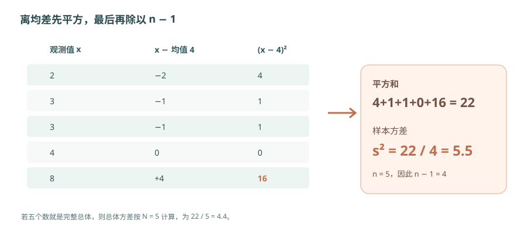
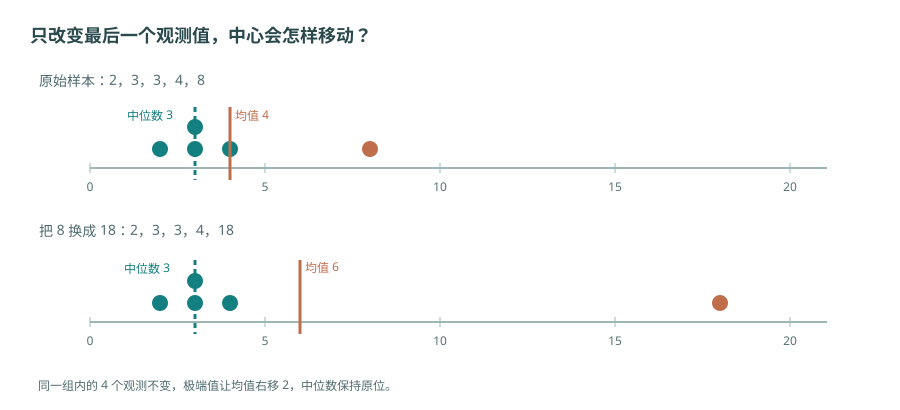

描述统计：位置、离散程度与极端值
“平均是 4”究竟隐藏了什么？同样的均值可能对应完全不同的分布；观察值中出现一个极端数，中心与波动又会怎样变化？
01 · 五个数，三种中心
一个数据集至少要从三个角度看：位置（典型值靠近哪里）、散布（数据分得多开）和形状（是否偏斜、是否有厚尾或多个峰）。单独报均值，会隐藏其他两个维度。
| 记录 | 任务 1 | 任务 2 | 任务 3 | 任务 4 | 任务 5 |
|---|---|---|---|---|---|
| 耗时（分钟） | 2 | 3 | 3 | 4 | 8 |
数据已经排序，中间的第 3 个数为 3，重复最多的数也是 3，但均值是 4。不同的摘要回答不同问题，不能只因为某个数字看起来更“漂亮”就偏好它。
02 · 均值、中位数、众数
均值：数值的算术平衡点
均值是全部观测值之和除以观测数。它使用了所有数值，因此最后一个大数会对结果产生明显影响。
中位数：排序后的中间观测值，五个数的中位数为 3；若个数为偶数，通常取中间两个值的平均值。中位数对个别极端值的具体数值更不敏感。
众数：出现频数最多的数。这里 3 出现两次，众数为 3。若各数出现次数相同，可能没有唯一众数；若两类并列最高，可能有两个众数。众数也适用于类别型数据。
如何选位置指标？
想概括数值总量与每单位平均贡献，均值常有意义；想表示“中间一半在谁附近”，或存在明显极端值，先看中位数；想知道最常见的类别，选众数。不能仅靠均值大于中位数就严格证明分布右偏，这最多是一条线索。
03 · 范围、四分位距和离散度
极差（range）为最大值减最小值：8 − 2 = 6 分钟，直观但依赖两个极端点。四分位距（IQR）为第三四分位数减第一四分位数，描述中间约一半数据的跨度；四分位数有多种定义，软件可能得到不同的小样本结果。
若按“奇数长度时排除中位数，再对上下两半分别取中位数”的约定：下半部分为 2、3，Q1 = 2.5；上半部分为 4、8，Q3 = 6；IQR = 3.5 分钟。这不是所有软件的默认实现。例如常见线性插值分位数可能给出 Q1 = 3、Q3 = 4。比较不同来源的分位数前必须写明约定。
中心指标
均值 4 分钟，中位数 3 分钟，众数 3 分钟。
离散指标
极差 6 分钟；按所述排中位数法 IQR = 3.5 分钟。
04 · 样本方差为何除以 n − 1
先计算每个观测值距均值 4 的差，平方后相加。偏差的平方和为 4 + 1 + 1 + 0 + 16 = 22（分钟²）。平方使正负偏差不相互抵消，也会让远处的大偏差权重更高。

把五个数当作从更大总体抽取的独立同分布样本，用样本均值代替未知总体均值后，通常使用 n − 1 校正自由度，得到常用的无偏样本方差估计：
如果这五个数恰好就是研究总体的全部单位，则用总体均值与总体数量 N：
在这个完整五人总体的解释下，总体方差为 22 ÷ 5 = 4.4 分钟²。相应的样本标准差是 √5.5 ≈ 2.345 分钟，总体标准差是 √4.4 ≈ 2.098 分钟。标准差把单位从分钟²恢复成分钟，更便于与原始数据比较。
n − 1 不是机械口诀
当目标是从 i.i.d. 数据估计总体方差、且使用样本均值居中时，除以 n−1 对总体方差是无偏的。若数据本身就是完整总体，或存在复杂抽样权重、时间相关性，不能不加分析地沿用此公式。
05 · 异常值怎样改写结论

这个变化不代表应该删除 18。极端值可能是录入错误，也可能是确实发生的慢任务。先检查来源、定义与业务合理性，再考虑是否用中位数、截尾均值或多种指标同时报告，而不是先“清洗掉不喜欢的数据”。
同样，方差对极端值更敏感：替换为 18 后，五个值的均值为 6，离均差平方和为 182，样本方差变成 182 ÷ 4 = 45.5 分钟²。
06 · 交互、代码和自测
只修改最后一次耗时
均值：4.00 中位数：3 样本标准差：2.35
其他四个值始终固定为 2、3、3、4。图 2 对比的是滑块取 8 与 18 两种情况。
下列 Python 只使用标准库，计算均值、样本方差和中位数；运行结果可以和手算逐项核对。
from statistics import mean, median, variance, stdev
x = [2, 3, 3, 4, 8]
print(mean(x)) # 4
print(median(x)) # 3
print(variance(x)) # 5.5 (n-1)
print(round(stdev(x), 3)) # 2.345自我检查
问题 1：两个数据集均值相同，方差一定相同吗？
回答：不一定。例如 [3, 3] 与 [1, 5] 的均值同为 3，但离散程度不同。
问题 2：已知某组样本有 5 个值且样本方差为 5.5，离均差平方和是多少？
回答：5.5 × (5 − 1) = 22。
参考资料
- OpenStax Introductory Statistics 2e, §2.5：均值、中位数与众数。
- OpenStax Introductory Statistics 2e, §2.7：方差与离散指标。
- NIST/SEMATECH, Measures of Scale：样本标准差、尺度与稳健性。
五个耗时数值均为教学构造；四分位数规则已明确，不应与不同插值算法的结果直接混用。